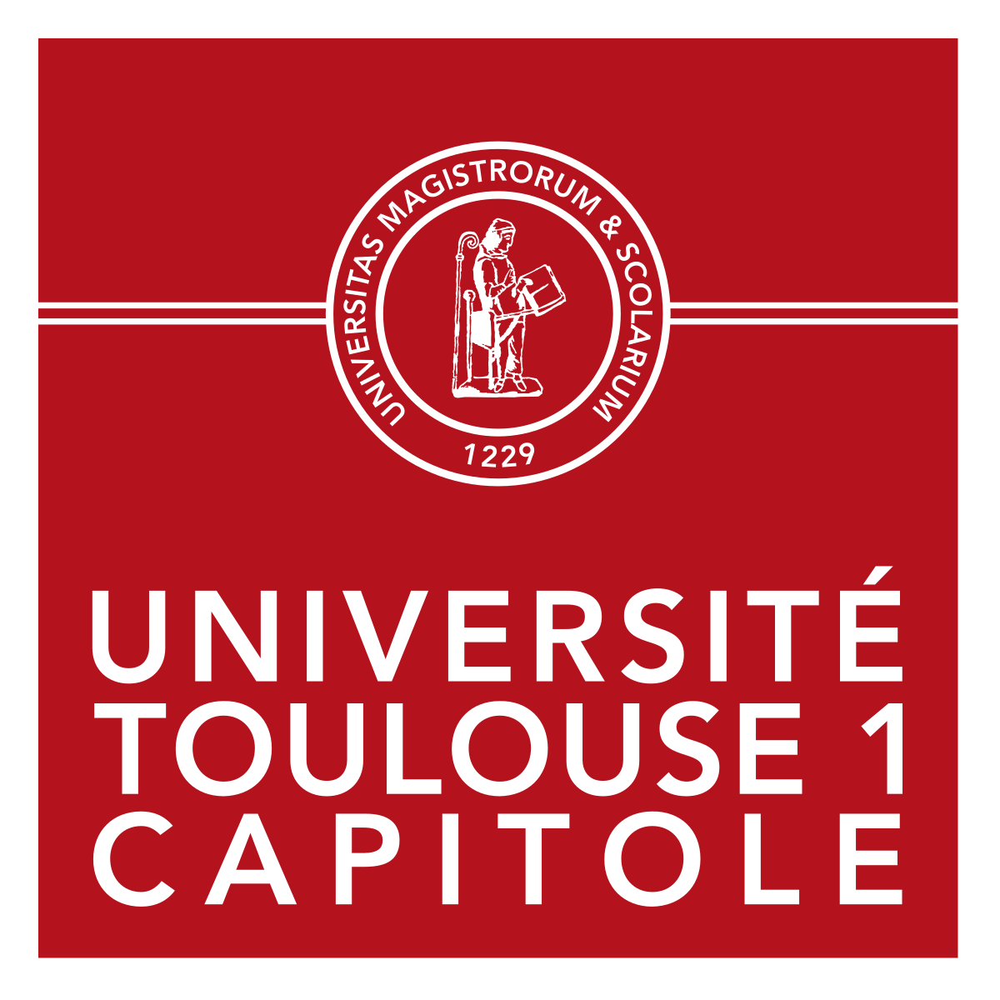

Dr. Md Siddiqur Rahman
Interest: Artificial Intelligence, Machine Learning, Deep Learning
Email: ronicse59gmail.com



The world is filled with a lot of data. Pictures, music, words, spreadsheets, videos, and it does not look like it's going to slow down anything soon. Machine Learning brings the promise of deriving meaning from all of that data. I found machine learning not to be magic, but rather tools and technology that we can utilize to answer the question with our data. The real world actually very messy. Hard logical rules are not the way to solve really interesting real-world problems. We have to have a system that will learn to get the knowledge in. We cannot just program it all in. Artificial intelligence is an effort to build machines that can learn from their environment, from the mistake, and from people. And we are at a stage where we do not know what is the right path and the right breakthrough. There's certainly a whole raft of different approaches. One of the subfields we called Machine Learning, Pattern Recognition, Artificial Neural Network, Reinforcement Learning, for example. My vision, at each of my next step I will be exploring the art, science, and tools of machine learning. My vision, at each of my next step I will be exploring the art, science, and tools of machine learning.